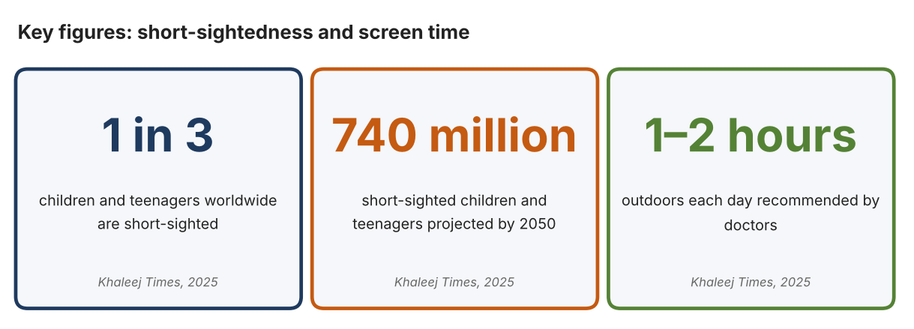
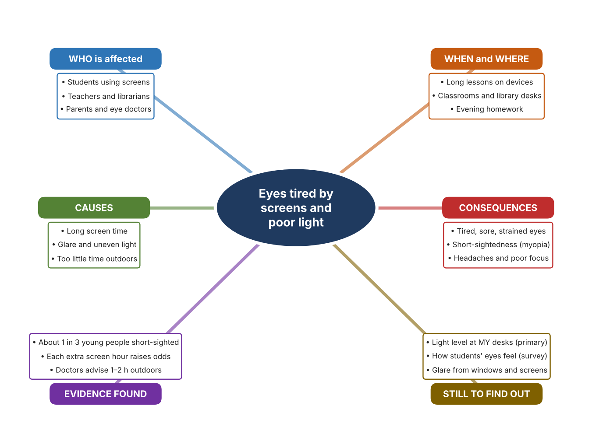
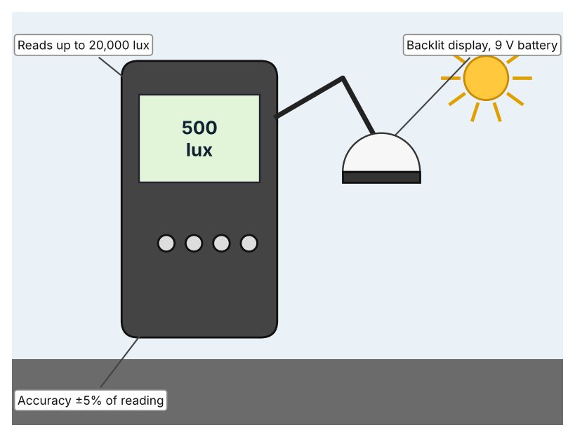
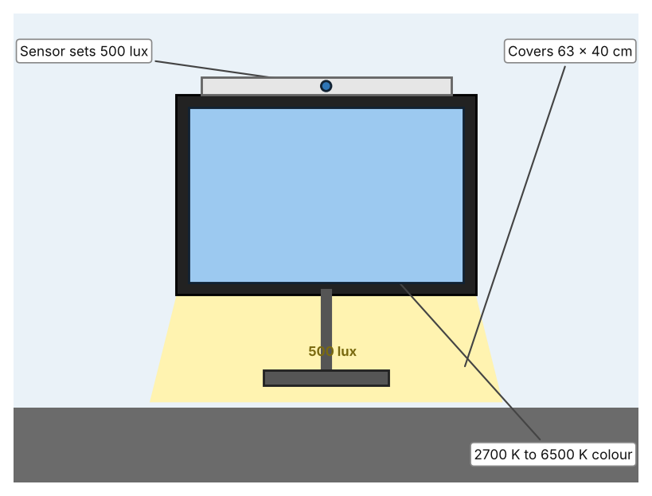
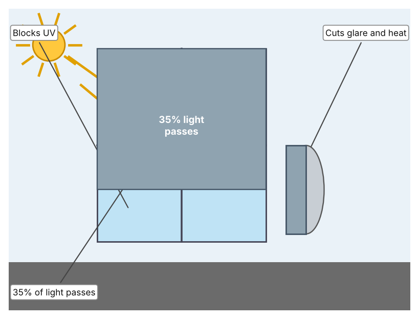

A1 · Design need
Identify and explain the problem faced by your client and community.
My client is the Digital Learning Team of a Dubai school, represented by the Head of Library and Technology. The team manages the devices and the library study areas where students spend long periods reading from screens. It has noticed students rubbing their eyes and moving seats to avoid glare, and it needs the strain on students' eyes to be reduced by making the lighting in work areas comfortable and measured.
The people most affected are students who use screens for long lessons and homework, because their eyes work hard at close distance. Teachers and librarians are a second group, because they set up rooms and decide how devices are used. Parents are a third group, because they notice complaints about headaches and tired eyes at home.
The need is real because short-sightedness is increasing. Khaleej Times reports that about one in three children and teenagers worldwide are short-sighted, that the number is projected to exceed 740 million by 2050, and that each extra hour of screen time is linked to higher odds of short-sightedness (Sircar). A doctor quoted in the article says that doctors in the UAE have seen a measurable increase in cases among school-age children, and doctors recommend one to two hours outdoors every day. The article gives no UAE prevalence numbers, and it concerns screen time and outdoor time, not classroom lighting, so I do not yet know how much lighting contributes.
Figure 1 summarises the key numbers. The global figures describe short-sightedness and the UAE evidence is a doctor's observation, so I treat them as a pattern and not as proof about my school's lighting. In my own words: eye strain builds slowly, so the first signs are easy to ignore. Figure 2 is my mind map of the problem.
295 words


A2 · Research plan
Six research questions of different types, each with a priority, a research type and evidence.
| # | Question | Priority | Primary / secondary | Evidence | Brief answer |
|---|---|---|---|---|---|
| 1 | Factual: How common is short-sightedness among young people, and how is it expected to change? | High | Secondary | Khaleej Times, 19 Sept. 2025 (Appendix A, Source 1) | About one in three children and teenagers are short-sighted worldwide, and the number is projected to exceed 740 million by 2050. |
| 2 | Factual: What do doctors in the UAE say about screens and eyes? | High | Secondary | Khaleej Times, 19 Sept. 2025 (Appendix A, Source 1) | A doctor reports a measurable increase in short-sightedness among school-age children; each extra hour of screen time is linked to higher odds; one to two hours outdoors and the 20-20-20 rule are advised. |
| 3 | Conceptual: What is a lux, and how is the brightness of a room measured and set? | Medium | Secondary | Extech page (Source 2); BenQ page (Source 3) | Lux measures light falling on a surface. A light meter reads up to 20,000 lux; a desk lamp can set itself to 500 lux, the standard for offices. |
| 4 | Debatable: Should schools reduce eye strain by measuring light, by adding a task lamp, or by cutting glare from windows? | Medium | Secondary | Appendix A, Sources 2, 3 and 4 | A meter gives facts but changes nothing; a lamp adds light where it is needed; window film cuts glare and heat but also darkens rooms. My view: measure first, then choose. |
| 5 | Debatable (challenges my assumption, UAE source): Short-sightedness comes from screen time, so is classroom lighting really worth investigating? | High | Secondary | Khaleej Times, 2025 (Source 1) | The article links short-sightedness to screen time and too little time outdoors, and does not mention lighting. Lighting may matter for comfort rather than for short-sightedness, so my own measurements and survey must show whether students experience glare or dim light. |
| 6 | Factual (primary): How bright are our classroom and library desks in lux, and how do students' eyes feel after screen lessons? | High | Primary | Own light-level log and student survey (Appendix A, Sources 5 and 6) | [Student data needed: write the lux readings (with the time of day) and survey averages, then two sentences on the pattern you see.] |
A3 · Existing products
Three significantly different products, each analysed with ACCESS FM, with pros and cons.
Product 1: Digital light meter (Extech LT300)

Illustration by the author based on the Extech LT300 listing, Instrumart (Appendix A, Source 2). [Student: replace with a photo from the source, cited MLA 9]
Product 2: Monitor light bar (BenQ ScreenBar Halo)

Illustration by the author based on “ScreenBar Halo,” BenQ (Appendix A, Source 3). [Student: replace with a photo from the source, cited MLA 9]
Product 3: Window film (3M Sun Control Silver 35)

Illustration by the author based on the 3M Sun Control Window Film Silver Series 35 page, 3M Singapore (Appendix A, Source 4). [Student: replace with a photo from the source, cited MLA 9]
ACCESS FM analysis
| ACCESS FM | Product 1 | Product 2 | Product 3 |
|---|---|---|---|
| Aesthetics | Handheld meter with a backlit display; styling is not described (Instrumart). | Slim bar that sits on top of a monitor; Ra above 95 and non-flicker light (BenQ). | Silver reflective film; look from outside is not described (3M). |
| Cost | From US$244 (Instrumart). | Price not stated on the page (BenQ). | Price not stated; sold as a roll (3M). |
| Customer | People who need to check light levels, such as teachers or facilities staff. | Individual desk users with a monitor. | Owners of windows with strong sun. |
| Environment | Runs on a 9 V battery. | Powered by USB 5 V, 1 A (1.3 A recommended). | Reduces heat entering through windows; cuts cooling load (my inference). |
| Size | Size is not listed. | Light covers 63 × 40 cm at 500 lux. | Roll 1,828.8 mm × 30.48 m. |
| Safety | No hazard stated. | Low-voltage USB light. | Film is fitted on glass; safety is not discussed. |
| Function | Measures light up to 20,000 foot-candles or lux with 0.01 resolution. | Senses ambient light and dims to 500 lux; three light modes and a wireless controller. | Passes 35% of visible light, rejects heat and glare and blocks UV. |
| Materials | Materials are not stated. | Materials are not stated. | Film material is not stated. |
Pros and cons
| Product 1 | Product 2 | Product 3 | |
|---|---|---|---|
| Pro | Gives an accurate number so lighting decisions are based on facts. | Adjusts itself to a recommended brightness and does not flicker. | Cuts glare and heat from the sun across a whole window. |
| Con | It measures only; it does not change the light. | Lights one desk at a time and needs a monitor and USB power. | Makes rooms darker on cloudy days and needs to be fitted correctly. |
A4 · Design brief
Restate the need, summarise the research and the existing products, and state the design intent.
My client, the Digital Learning Team of a Dubai school, needs the strain on students' eyes to be reduced by making lighting in study areas comfortable and measured. The problem is real: about one in three children and teenagers worldwide are short-sighted, and the number is projected to exceed 740 million by 2050 (Appendix A, Source 1). Doctors in the UAE report a measurable increase among school-age children and advise one to two hours outdoors a day (Appendix A, Source 1).
My research shows that screen time and outdoor time are the main factors named in the evidence I found, and that classroom lighting was not named (Appendix A, Source 1). Lighting may therefore matter more for comfort than for short-sightedness, and I need my own evidence. My debatable questions led me to decide that measuring, task lighting and glare control each cover only part of the problem, and my challenged assumption (that screen time is the whole story) showed me that I should not claim more than the evidence supports. I will gather my own evidence with the light-level log and the survey, always with permission (Appendix A, Sources 5 and 6).
I analysed three very different existing solutions. A digital light meter reads up to 20,000 lux with an accuracy of ±5% and starts at US$244, but it only measures (Appendix A, Source 2). A monitor light bar senses the room and dims to 500 lux, the office standard, but it lights only one desk and needs USB power (Appendix A, Source 3). Window film passes 35% of the light and reduces glare and heat, but it can make rooms darker on cloudy days (Appendix A, Source 4). They give me three ideas for inspiration: measuring, adjusting the light at the desk, and controlling the light from outside. Each has a weakness that another covers.
My design intent is therefore to create a solution that measures the light at a student's desk and tells them or their teacher when it is too dim or too bright for comfortable screen work. It must be affordable, simple to understand at a glance, safe for a classroom, and reliable through a school day. I have deliberately not fixed what form it will take. That decision will be made in Criterion B, after I analyse my own log and survey against the evidence in Appendix A.
394 words
Appendix A · Research notes and sources
Secondary sources in MLA 9, with notes and where each source is used.
| # | Source (MLA 9) | Key notes | Used in |
|---|---|---|---|
| 1 | Sircar, Nandini. “UAE: Excessive Screen Time Leads to Rise in Myopia, Especially among Students under 10.” Khaleej Times, 19 Sept. 2025, www.khaleejtimes.com/lifestyle/health/uae-excessive-screen-time-myopia-school-children. Accessed 21 Oct. 2026. | About 1 in 3 children and teenagers short-sighted worldwide; over 740 million by 2050 (British Journal of Ophthalmology analysis); each extra screen hour linked to higher odds; a doctor reports a measurable increase in UAE school-age children; 1–2 h outdoors and 20-20-20 advised; no UAE prevalence numbers; lighting not discussed. | A1; A2 Q1, Q2 and Q5; A4. |
| 2 | “Extech LT300 Light Meter.” Instrumart, www.instrumart.com/products/24788/extech-lt300-light-meter. Accessed 21 Oct. 2026. | From US$244; up to 20,000 fc/lux; ±5% of reading; 0.01 resolution; backlit LCD with bargraph; 9 V battery; size not listed. | A2 Q3 and Q4; A3 Product 1; A4. |
| 3 | “ScreenBar Halo.” BenQ, www.benq.com/en-in/lighting/monitor-light/screenbar-halo.html. Accessed 21 Oct. 2026. | Ambient sensor auto-dims to 500 lux (ANSI office standard); 2700–6500 K; three modes; wireless controller; USB 5 V/1 A; Ra above 95; non-flicker; 63 × 40 cm at 500 lux; price not stated. | A2 Q3 and Q4; A3 Product 2; A4. |
| 4 | “3M Sun Control Window Film Silver Series 35 Exterior.” 3M Singapore, www.3m.com.sg/3M/en_SG/p/d/v000586367. Accessed 21 Oct. 2026. | Visible light transmission 35%; heat rejection, glare and eye-discomfort reduction, UV blocking; roll 1,828.8 mm × 30.48 m; other values not listed. | A2 Q4; A3 Product 3; A4. |
| 5 | Primary: desk light-level log, completed by the student on [date]. Accessed own data. | [Student: summarise your counts.] | A2 primary question; A4. |
| 6 | Primary: survey of [number] people, completed on [date]. | [Student: summarise your averages.] | A2 primary question; A4. |
Primary research instrument 1: desk light-level log
Student takes lux readings at desks with a phone light-meter app or a lux meter, with permission and a teacher present.
| Place | Time | Lux (lights on) | Window glare (Y/N) | Screen glare (Y/N) | Notes |
|---|---|---|---|---|---|
| Classroom front | |||||
| Classroom back | |||||
| Library desk | |||||
| Computer lab |
Primary research instrument 2: survey
Rate each statement from 1 (strongly disagree) to 5 (strongly agree). Collect responses with permission and record no names.
| Statement | 1 | 2 | 3 | 4 | 5 | Total responses |
|---|---|---|---|---|---|---|
| My eyes feel tired after a lesson on a device. | ||||||
| There is glare from windows or lights on my screen. | ||||||
| My desk is too dark to read comfortably. | ||||||
| I would use a light that tells me when my desk is too dim or too bright. |